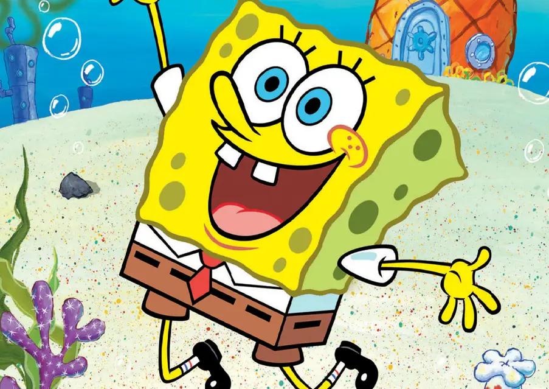
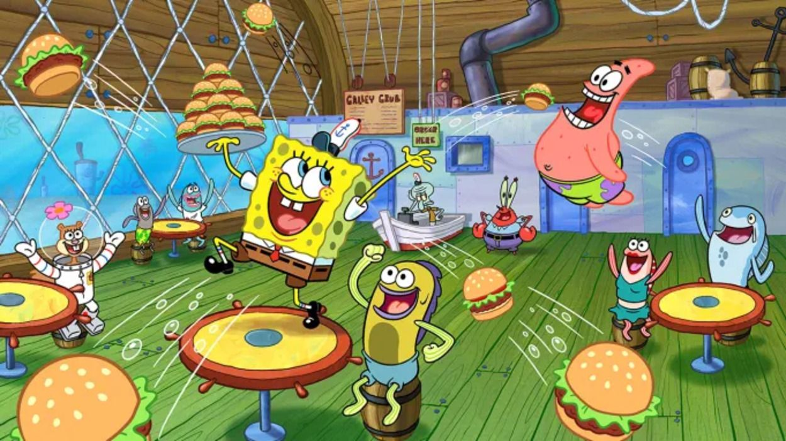
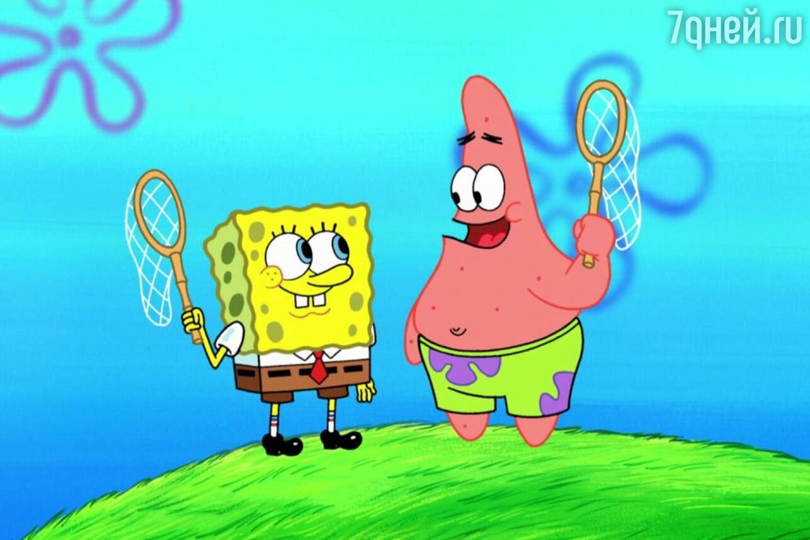
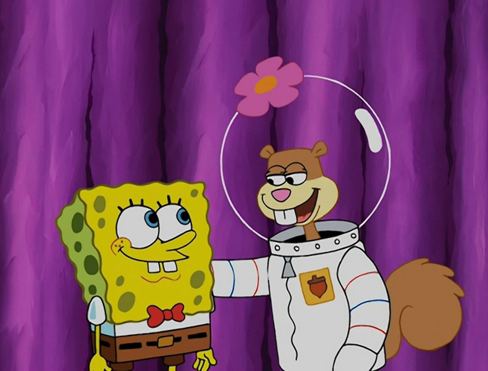
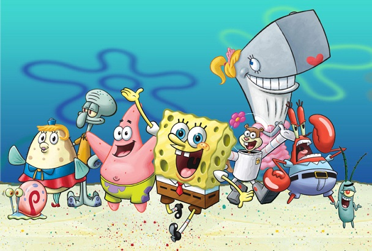

Губка Боб — улюблений герой мільйонів.
Губка Боб Квадратні Штани — це один із найвідоміших мультяшних персонажів сучасності. Його яскравий жовтий колір, квадратна форма тіла та завжди позитивний настрій зробили його впізнаваним у всьому світі. Мультфільм про Губку Боба вперше вийшов у 1999 році на каналі Nickelodeon і з того часу став культовим серед дітей та дорослих.

Життя на дні океану
Головний герой живе в підводному містечку Бікіні Боттом у будинку у формі ананаса. Він працює кухарем у ресторані "Красті Краб", де готує улюблені всіма крабсбургери. Його шеф — містер Крабс, який понад усе любить гроші, а колега Сквідвард — вічно незадоволений і мріє про спокійне життя без шуму.

Друзі та пригоди
Найкращий друг Губки Боба — морська зірка Патрік. Вони разом часто потрапляють у веселі й іноді абсурдні ситуації. Також серед близьких друзів — білка Сенді, яка живе під куполом і носить скафандр, адже вона з суші. Разом вони переживають багато пригод і показують, що справжня дружба — це сила.
 
Унікальний гумор і стиль
Мультфільм вирізняється особливим стилем гумору, який зрозумілий як дітям, так і дорослим. Завдяки яскравій анімації, цікавим персонажам та дотепним жартам "Губка Боб Квадратні Штани" став справжньою класикою. Він не лише розважає, а й передає важливі цінності: доброту, працьовитість і щирість.

Культурний феномен
З роками Губка Боб перетворився на справжній культурний феномен. Його образ використовують у мемах, на одязі, іграшках і навіть у фільмах. Попри десятки років на екрані, популярність персонажа не зменшується. Губка Боб продовжує тішити нові покоління глядачів і нагадує всім, що навіть на дні океану можна бути щасливим.